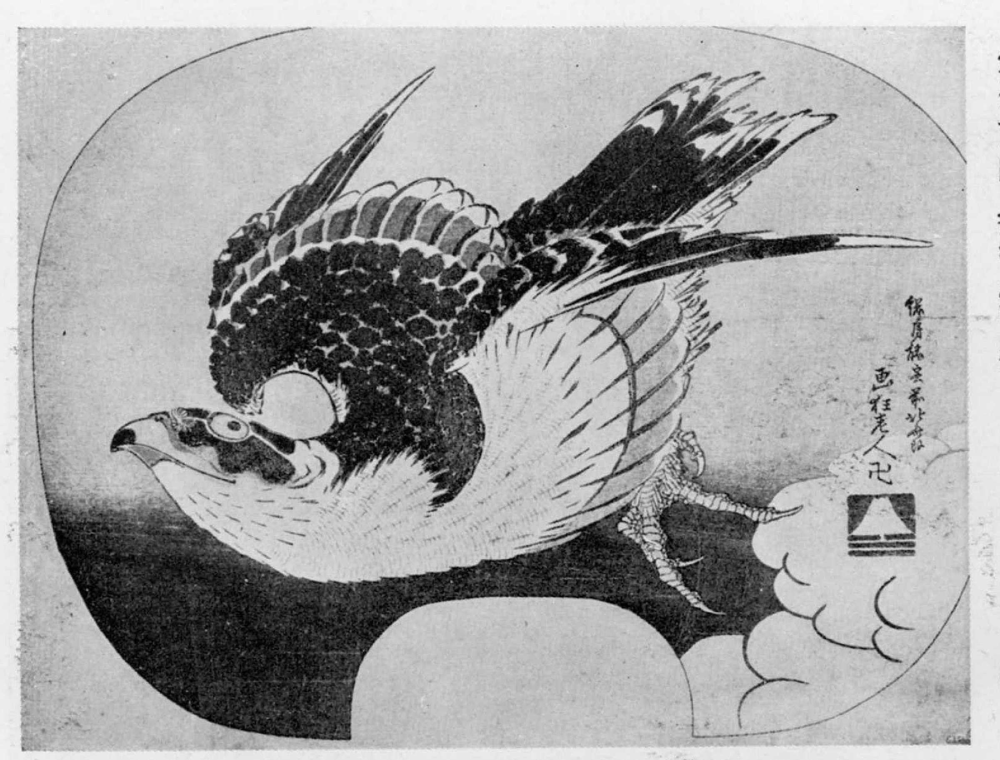

Кацусика Хокусай- широко известный японский художник укиё-э, гравер периода Эдо. Родился 31 октября 1760 года в Эдо- современное Токио. Умер в возрасте 88 лет, 10 мая 1849 года, также в Эдо. Мастер завершающего периода японской ксилографии.
Использовал не менее 30 псевдонимов на протяжении всей своей жизни. Несмотря на то, что художники того времени достаточно часто использовали псевдонимы, Хокусай является облдателем наибольшего их количества. Его псевдонимы часто используются для периодизации этапов его творчества. Но обо всем по порядку)))
Родился в семье ремесленника Никадзимы Исэ, в районе Кацусика. Его настоящее имя- Токитаро.
Начал рисовать с 6 лет. Возможно, толчком к этому послужило созидание работы отца, который изготовлял зеркала для сегуна, в том числе, и расписывал их рамы.
В 1770 году ушел из лавки отца и устроился разносчиком книг в район Ёкомоте. В это время у него уже появился псевдоним- Тэцудзо. Именно в этой книжной лавке Хокусай обучился грамоте и письму.
793 и 1794 стали переломными годами в карьере Хокусая. Начав самостоятельную жизнь, он столкнулся с большими трудностями. Известно, что ему приходилось жить впроголодь, заниматься мелкой торговлей, чтобы как-то прокормить себя. Но в это время и происходит формирование Хокусая как мастера. Он изучает разные школы живописи: помимо школы Кано его интересует школа Сотацу (иначе — Коэцу) (англ. Rimpa school), принадлежащая к живописи Ямато-э, особенно два её представителя — Таварая Сотацу и Огата Корин. Художник отказался потворствовать вкусам тогдашней публики, требующей привычных работ в жанре укиё-э, стал вырабатывать свой собственный стиль, почерпнув некоторые приемы японских школ живописи Римпа и Тоса, а также применив европейскую перспективу. В 1795 году выходят его иллюстрации к поэтической антологии «Кэка Эдо мурасаки». Между 1796 и 1799 Хокусай пишет много одиночных гравюр и альбомных листов. Последние «суримоно» — так назывались эти выполненные по заказу оттиски — имели колоссальный успех. В результате другие художники сразу же принялись их имитировать. Как раз в 1796 художник стал использовать ставший впоследствии широко известным псевдоним Хокусай. Этим именем он, начиная с 1798, подписывал гравюрные листы и живописные работы, некоторые выполненные по заказу иллюстрации он подписывал псевдонимом Тацумаса, иллюстрации для коммерческих романов выходили под именем Токитаро, другие многотиражные гравюры и иллюстрации к книгам были подписаны Како либо Соробэку. В 1800, в возрасте 41 года, художник стал называть себя Гакэдзин Хокусай — «Безумный живописью Хокусай».

Вот одна из его самых известных работ- "Большая волна в Канагаве"
Сразу после выхода первой части она становится чрезвычайно популярна и раскупается буквально за неделю. Содержание её было незамысловато: большинство рисунков изображали сценки из городской жизни, также содержалось множество зарисовок людей. Сборник не был построен по какому-либо принципу, по сути, он представлял собой дневник, куда мастер заносил всё виденное им в жизни, но только в форме рисунков, а не текстом. В целом, такой принцип был продолжен и в следующих выпусках, все они отличаются богатством сюжетов. Лишь в нескольких выпусках можно считать тематическими: например, в пятом выпуске много места отведено архитектурным зарисовкам, двенадцатый посвящён карикатуре, в четырнадцатом много изображений животных. После написания "Манги" Хокусай до конца жизни фактически ничего не пишет, только по заказу.
Вот довольно некраткая биография Хокусая. А дальше я просто оставлю подборочку, на мой взгляд, самых удачных его произведений : 
Красивая вещь, 14 том "Манги"
Знаменитая работа, "Цыпленок и бамбук"(правда, я не в курсе, почему цыпленок)


Это все вещи nfr;t из 14 тома "Манги"

Это просто красивая птичка

Это работа из серии "36 видов горы Фудзи"

Это произведение называется "Водопад среди деревьев"
В создании этого сайта я ориентировалась на свой художественный вкус и вот на эту страничку